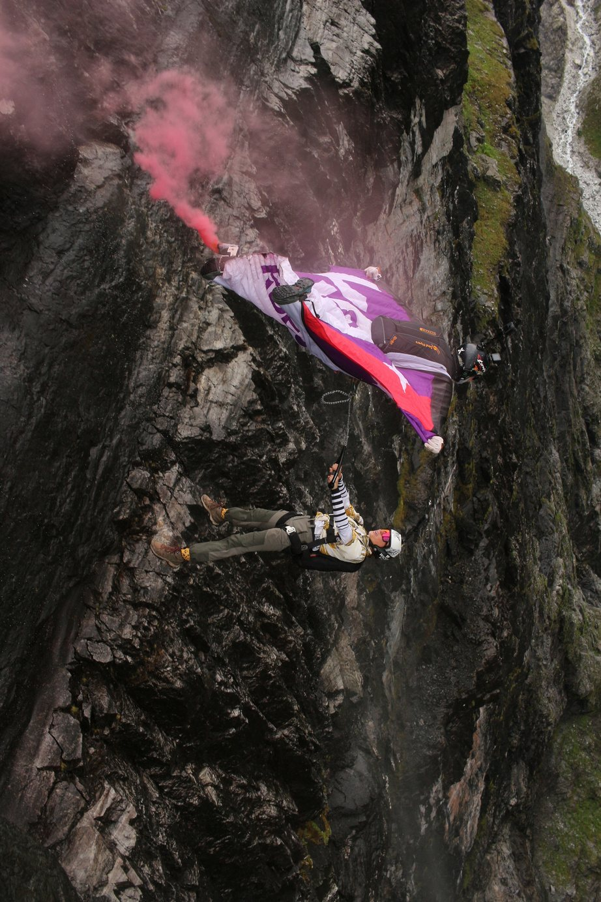
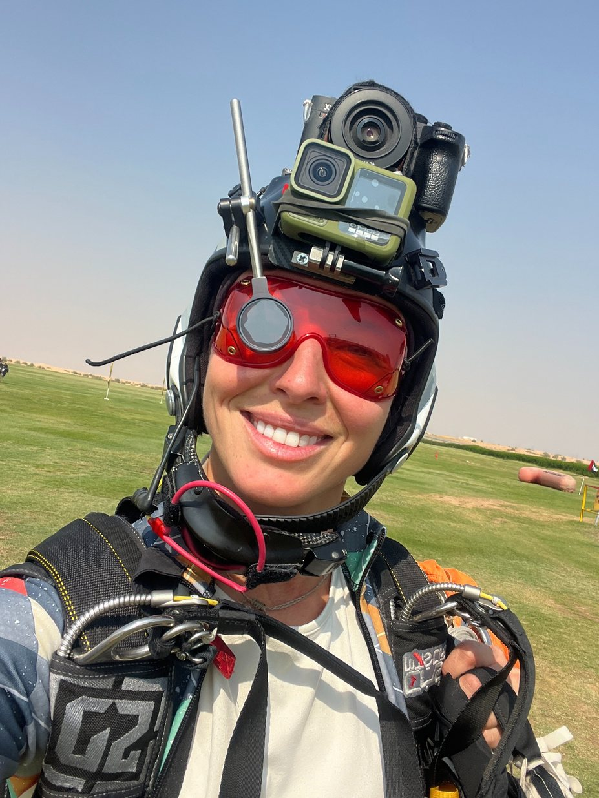
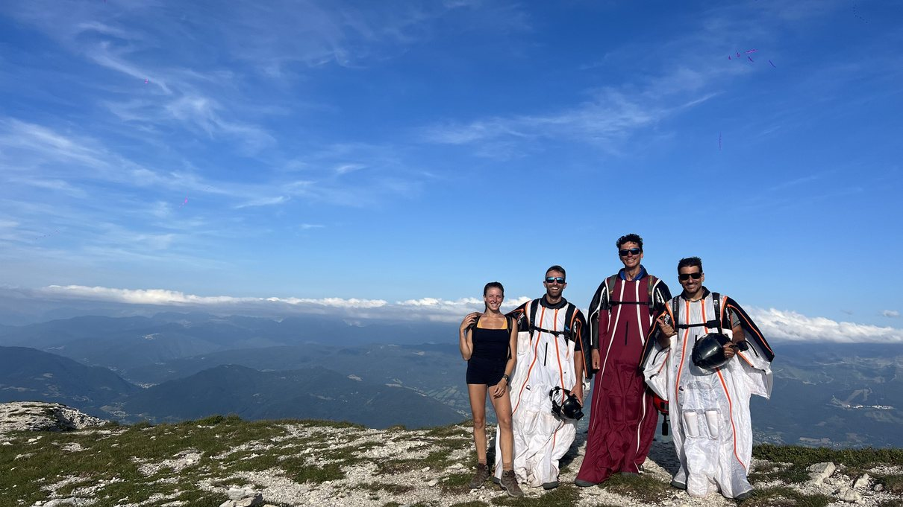
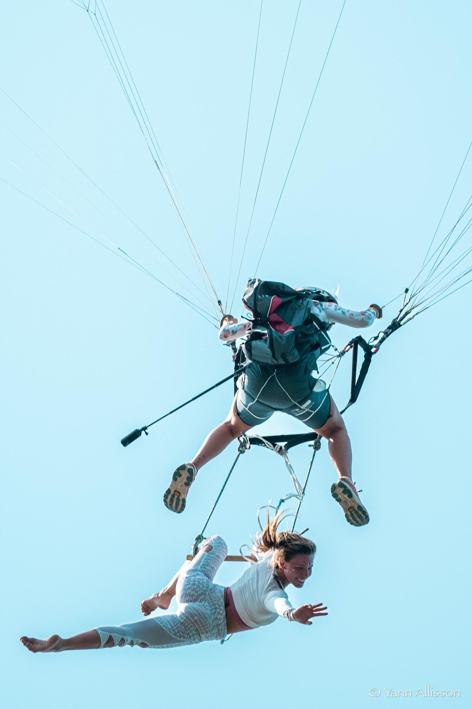
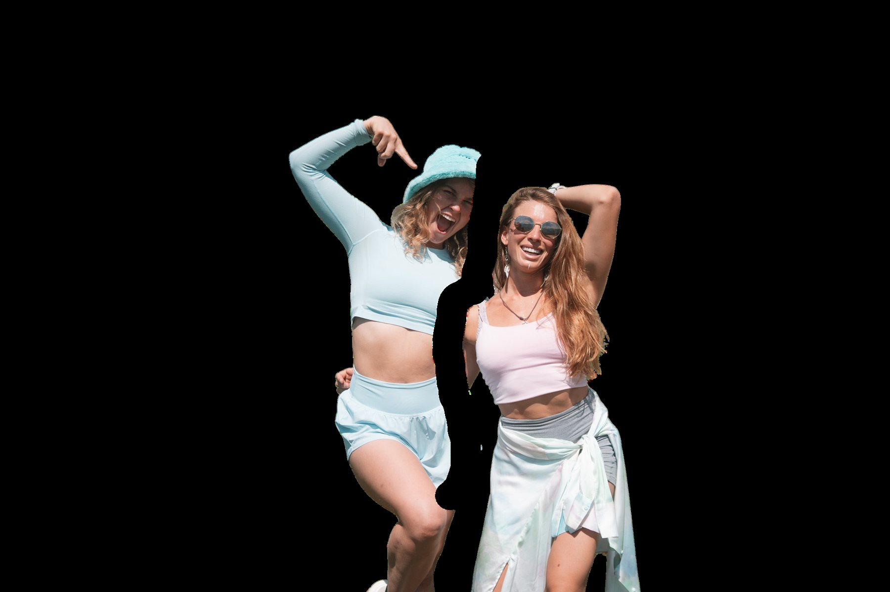
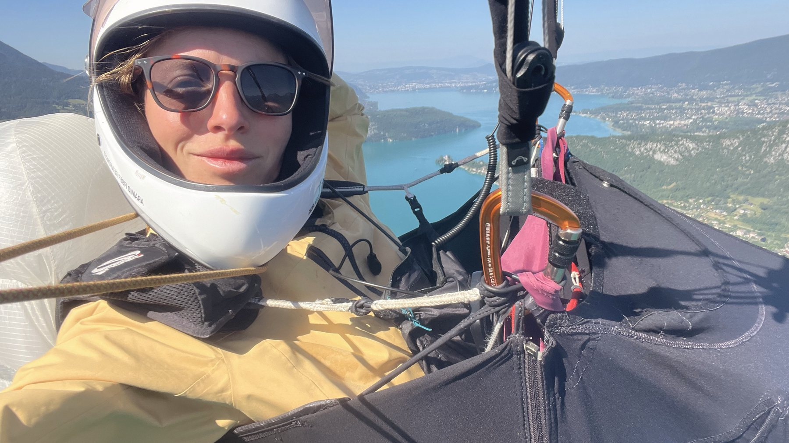

Maqueta · contenido del media kit 2026
02 — El espacio vertical
VerticalPlayground
El aire como espacio de juego: cuerpo libre, velocidad y forma. Freefly, wingsuit, camera flying y performance aérea — donde el movimiento se convierte en imagen.
Qué se hace aquí
Freefly y movimiento corporal en caída libre
Wingsuit y vuelo de proximidad
Camera flying: grabar a otros mientras vuelan
Shows aéreos y performance para eventos
Dónde ha pasado
My Wicked Dude · Noruega — producción audiovisualShows aéreos · WindAlps — performance y coberturaReality Show Guerreros — participación y contenidoParacaidismo y fotografía — fotografía aérea y camera flying
Fotos





